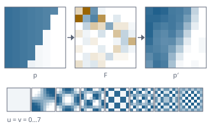

Ein eigener MPEG-1/2-Dekoder, gemessen an der Norm
Funktionsübersicht für die Präsentation des envisionz-Frameworks, Stand 28.09.2026. Bitebene und VLC-Tabellen, Kopfschichten bis zur Slice, Makroblöcke, inverse Quantisierung, IDCT und Bewegungskompensation, Bilder in Anzeigereihenfolge aus Strömen jeder Größe – dazu Farbraum, Aussteuerung, Chromalage und Seitenverhältnis für die Weiterverarbeitung. Je Verfahren: Zweck, Methoden, Einsatz im Framework, Anwendungen, Beispiele. Die Beispiele sind gekürzt.

Idct gerechnet: ein Block, seine Frequenzanteile, die Rückrechnung aus sechs Anteilen und die Basisbilder.Grundsätze des Moduls
byte[] und muss es auch nicht.Der Dekoder envisionz.video.mpeg
Dekoder – Elementarstrom hinein, Bilder in Anzeigereihenfolge heraus
Führt Entropieebene, inverse Quantisierung, IDCT und Bewegungskompensation zusammen, für MPEG-1 und MPEG-2. Drei Eingänge: ein byte[] mit gesammelter Liste, ein byte[] mit Senke, ein InputStream mit Senke. abSequenzkopf überliest bis zum nächsten Sequenzkopf – für den Einstieg mitten in eine Aufnahme, auf DVD beginnt jede VOBU mit einem. Datengeteilte Ströme bekommen ihren zweiten Teilstrom gesondert. Nach dem Lauf liegen alle Kopfangaben und Zähler vor. Hintergrund, Formeln und Pseudocode →
Methoden
dekodieren(byte[])→List<Bildpuffer>,dekodieren(byte[], senke),dekodieren(InputStream, senke)fehlerverdeckung(an),abSequenzkopf(an),zweiterTeilstrom(teil)bilder(),fehlermarken(),abgewieseneSlices(),verdeckteMakrobloecke(),verdeckteBilder(),abbruch()kopfangaben(),bildangaben(),bildgruppen(),anzeigeangaben(),skalierbarkeit(),urheberangaben(),benutzerdaten(),farbformatName()
Eingesetzt in
Wofür
DVD- und VCD-Material Bild für Bild restaurierbar machen, ohne fremden Dekoder, der unbemerkt verdeckt oder rundet.
Beispiel – einen Titelsatz durchlaufen und zählen, was verdeckt wurde
Dekoder dek = new Dekoder().fehlerverdeckung(true);
try (InputStream ein = Files.newInputStream(Path.of("titel1.m2v"))) {
dek.dekodieren(ein, bild -> verarbeite(bild.y(), bild.breite(), bild.hoehe())); // verarbeite: eigene Methode
}
System.out.println(dek.kopfangaben().meldung());
System.out.println(dek.bilder() + " Bilder, " + dek.verdeckteMakrobloecke() + " Makroblöcke verdeckt");Kopfangaben und Erweiterungen envisionz.video.mpeg
Kopfangaben, Bildangaben, Anzeigeangaben, Bildgruppe, Skalierbarkeit …
Was der Strom über sich sagt: Größe, Seitenverhältnis und Bildpunktverhältnis, Bildrate, Datenrate und Puffergröße; je Bild Art, Zeitbezug und Halbbilder; Videoart, Farbbeiwerte und Kennlinie aus der Anzeige-Erweiterung; Zeitcode der Bildgruppe; Skalierbarkeit (Datenaufteilung, SNR, räumlich, zeitlich) erkannt, nicht dekodiert; Urheberangaben und Benutzerdaten. Der Zeitcode sagt bei Leseschäden, wie viel fehlt.
Methoden
Kopfangaben:breite(),hoehe(),bildrate(),seitenverhaeltnisName(),bildpunktverhaeltnis(),datenrate(),meldung()Bildangaben:artName(),halbbilder();Anzeigeangaben:videoartName(),kennlinieName(),weichtAb(b, h)Bildgruppe.lesen(b),zeitcode(),bildnummer(bilderJeSekunde)Skalierbarkeit.lesen(b),name();BildSkalierbarkeit.Raeumlich/Zeitlich;Urheberangaben,Benutzerdaten.alsText()
Eingesetzt in
Kopfangaben)framework-restore: Sprungsucher (Bildgruppe)Wofür
Steckbrief einer Aufnahme, Sprung an eine Bildnummer über den Zeitcode, Nachweis von Lücken.
Schichten ohne Dekodieren envisionz.video.mpeg
Schichtenleser – bis zur Slice, ohne Koeffiziententabellen
Springt von Startcode zu Startcode durch Sequenz, Bildgruppe, Bild und Slice. Die wichtigste Nebenangabe ist die Quantisierungsstufe je Slice: wie grob in dieser Makroblockreihe gerundet wurde – dieselbe Information wie auf Makroblockebene in gröberer Auflösung, für ein Hundertstel des Aufwands.
Methoden
new Schichtenleser().lesen(d),bilder()→Bildangaben(nummer, art, zeitbezug, struktur, …)artZeichen(),mittlereQuantisierung(),quantisierungsprofil(bild)breite(),hoehe(),istMpeg2()
Eingesetzt in
Wofür
Schnell sehen, wo eine Aufnahme grob kodiert ist und wo sich eine Restaurierung am ehesten lohnt.
Rekonstruktion envisionz.video.mpeg
Makroblockleser, Quantisierung, Idct, Bewegungskompensation, Zweifach
Der Makroblockleser liest je Slice Adressen (mit Fluchtcode +33), Arten, Bewegungsvektoren und Koeffizienten in Zickzack- oder wechselnder Abtastfolge. Quantisierung mit Standard- und eigenen Matrizen, linearer und nichtlinearer Stufung, MPEG-1-Sonderfall. Idct getrennt nach Achsen in double. Bewegungskompensation holt ganz- und halbpixelige Vorhersagen aus Voll- und Halbbildern und mittelt bei zwei Richtungen; Zweifach leitet den zweiten Vektor der Dual-Prime-Vorhersage ab. Hintergrund, Formeln und Pseudocode →
Methoden
Makroblockleser(breite),slice(b, reihe, anfangsQuant),bloecke()→Makroblock(intra(),halbbildVorhersage(),zweifach(), …)Quantisierung.zurueck(koeff, innerbildlich, stufenkennwert),intraMatrix,stufenart,matrixLesen(b)Idct.rueck(int[64]),Idct.hin(double[64])Bewegungskompensation.holen,holenAusHalbbild,mitteln;Zweifach.imVollbild,imHalbbild
Eingesetzt in
Wofür
Die Bausteine einzeln prüfbar halten; Makroblockarten und Vektoren für forensische Auswertungen zugänglich machen.
Beispiel – ein Block zurück in Bildpunkte
int[] f = new int[64]; f[0] = 1024; // nur Gleichanteil
int[] p = Idct.rueck(f); // 64 gleiche Werte, je 128Bitebene envisionz.video.mpeg
Bitleser, Bitschreiber, Doppelleser, Vlc, Abtastfolge
Bitleser mit Vorschau, Vorzeichen und Startcode-Erkennung; Vlc als Nachschlagetabelle über eine feste Bitbreite. Doppelleser schaltet bei Datenaufteilung zwischen zwei Teilströmen um – es wird nichts neu kodiert, beide Teile enthalten zusammen dieselben Bits. Abtastfolge hält Zickzack und wechselnde Folge.
Methoden
Bitleser(d[, von, laenge]),bits(n),schau(n),vorzeichen(n),aufByteAusrichten(),startcodeVoraus(),stelle()Vlc(eintraege),lies(b),schau(b),UNGUELTIGDoppelleser(erster, zweiter),jetzt(),umschalten(),zurueck();Bitschreiber.uebernehmen(q, von, anzahl)Abtastfolge.ZICKZACK,WECHSELND,folge(wechselnd)
Eingesetzt in
Bitleser für den Bildgruppenkopf)intern: alle LeserWofür
Kopfangaben an beliebiger Stelle lesen, ohne den Dekoder anzuwerfen.
Bilder envisionz.video.mpeg · envisionz.video.bild
Bildpuffer, Bild, YuvLeser – Y, Cb, Cr statt RGB
Bildpuffer ist die Ausgabe des Dekoders: drei int-Ebenen 0…255, bei 4:2:0 halb so breite und halb so hohe Farbebenen, mit Bildart und Zeitbezug. Bild ist die Form für die Restaurierung: double-Ebenen im Wertebereich der Datei, bewusst nicht RGB, denn die Unterabtastung der Farbe ist selbst ein Messwert; Halbbilder lassen sich herauslösen. YuvLeser liest rohe YUV-Folgen, deren Größe von außen kommt.
Methoden
Bildpuffer:y(),cb(),cr(),breite(),hoehe(),farbBreite(),art(),zeitbezug()Bild(y, cb, cr, breite, hoehe, …),hell(x, z),zeile(z),halbbildHeraus(oben),nummer()YuvLeser(pfad, breite, hoehe[, teilerX, teilerY]),naechstes()→Bild
Eingesetzt in
Bildpuffer)framework-restore: Bildmessung, Vorverarbeitung, Schnitterkennung (Bild)Wofür
Dekodierte Bilder ohne Informationsverlust an Anzeige, Messung und Restaurierung weitergeben.
Farbe und Geometrie envisionz.video.farbe
Farbraum, Pegel, Chromalage, Seitenverhaeltnis
Die Umrechnungen, an denen fast jede Werkzeugkette scheitert. Farbraum: Y'CbCr ↔ RGB nach BT.601 oder BT.709, Pegeldehnung eingeschlossen. Pegel: Helligkeit 16…235, Farbe 16…240, dehnen und stauchen, Videopegel erkennen. Chromalage: wo der Farbwert bei 4:2:0 liegt – MPEG-1 in der Mitte, MPEG-2 links. Seitenverhaeltnis: PAL 720 × 576 bei 4:3 wird zu 768 × 576 quadratischen Punkten; gehört ans Ende der Kette. Hintergrund, Formeln und Pseudocode →
Methoden
Farbraum.nachRgb(y, cb, cr, Norm.BT601),nachYcbcr(r, g, b, norm),ebenenNachRgb(y[], cb[], cr[], norm)Pegel.hellDehnen,hellStauchen,farbeDehnen,sichtVideopegel(ebene)Chromalage.hochrechnen(farbe, fw, fh, breite, hoehe, Lage.LINKS)Seitenverhaeltnis.zielbreite(breite, hoehe, zaehler, nenner),waagerechtUmrechnen(ebene, breite, hoehe, neueBreite)
Eingesetzt in
Wofür
Anzeige und Export ohne Farbstich, ohne flaues Bild und ohne zu schmale Gesichter.
Beispiel – Zielbreite und ein Farbwert
int b = Seitenverhaeltnis.zielbreite(720, 576, 4, 3); // 768
double[] rgb = Farbraum.nachRgb(81.48, 90.20, 240.0, Farbraum.Norm.BT601); // reines RotEinsatzmatrix im Framework
Welche Module welche Teile heute nutzen, im Quelltext gezählt (ohne Proben).
| Modul | Dekoder | Kopfangaben | Schichtenleser | Bitebene | Bildpuffer | Bild | Farbe / Geometrie | Wofür |
|---|---|---|---|---|---|---|---|---|
| app-forensik | ● | ● | ● | Wiedergabe, Standbild, Lupe, Stapel- und Drizzle-Belege, VideoRestore | ||||
| framework-restore | ● | ● | ● | Sprungsucher über Zeitcode; Bildmessung, Vorverarbeitung, Schnitterkennung |
farbe, der Schichtenleser und der YuvLeser haben noch keinen Aufrufer außerhalb der Proben. Ungeprüft bleibt laut Modulbeschreibung alles oberhalb der Bausteine gegen einen zweiten Dekoder – ob die Bildpunkte am Ende stimmen, beantwortet erst die Referenzsoftware.